Etapa 2 · correção de direção artística
Margem aberta.
O título deixa a fotografia livre. Projeto, renovação e cuidado se distribuem pela composição, com espaço para a arquitetura e para os materiais. A direção dos grandes retângulos azuis foi descartada.
Três direções mais contidas
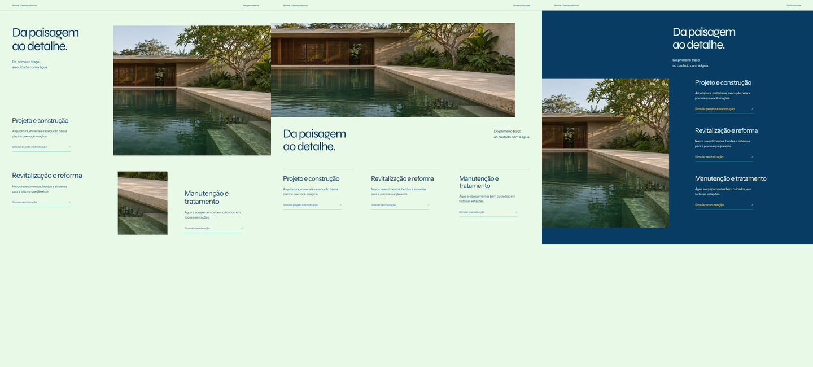
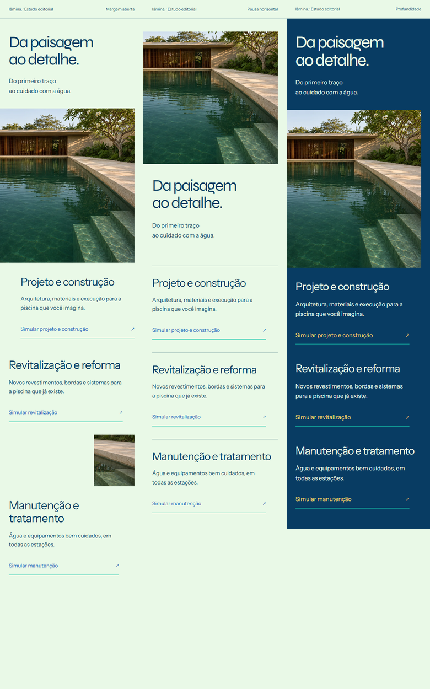
HTMLs dos estudos: Margem aberta, Pausa horizontal, Profundidade. As imagens são as cenas sintéticas existentes no projeto.
Proposta rejeitada e correção
Anterior à esquerda; nova direção à direita. Capturas completas sem reamostragem. O espaço inferior acomoda alturas diferentes.
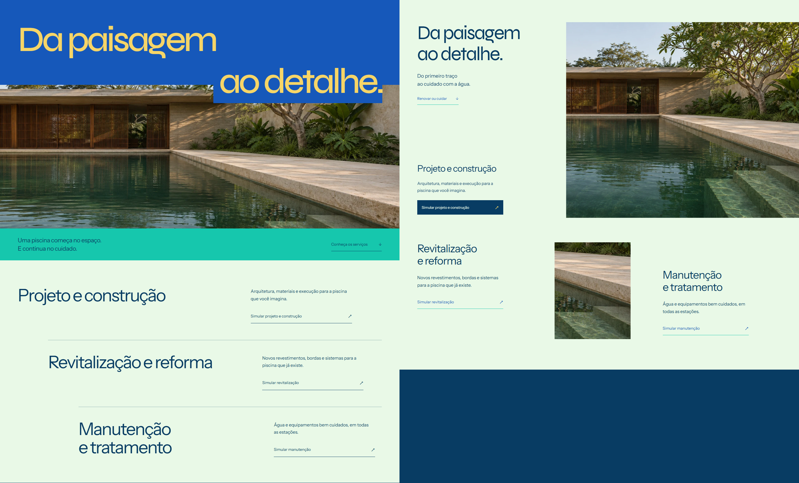
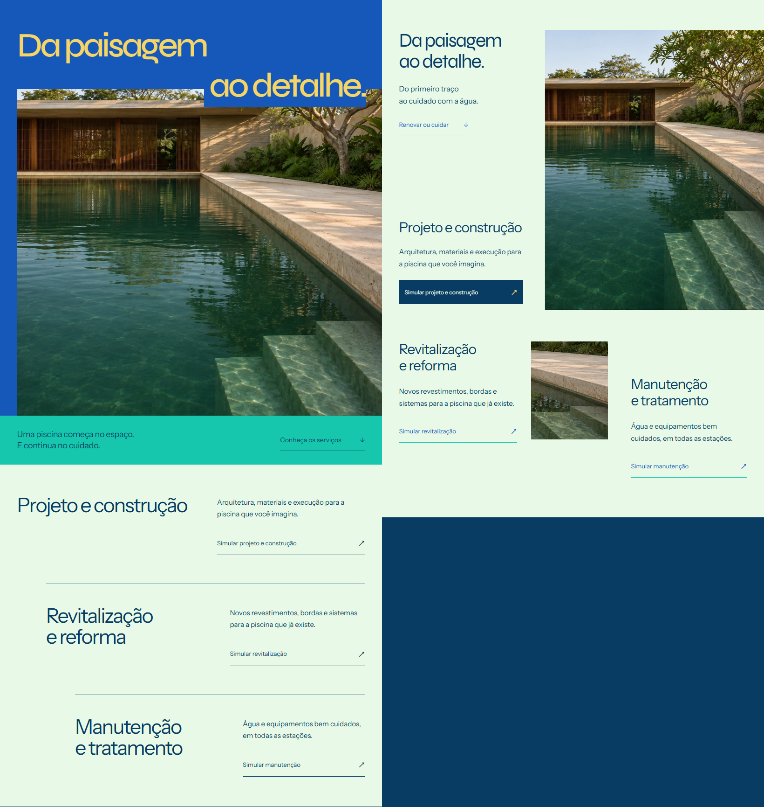
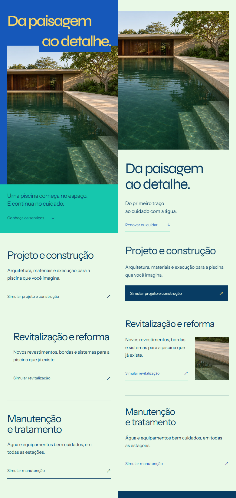
Nova composição

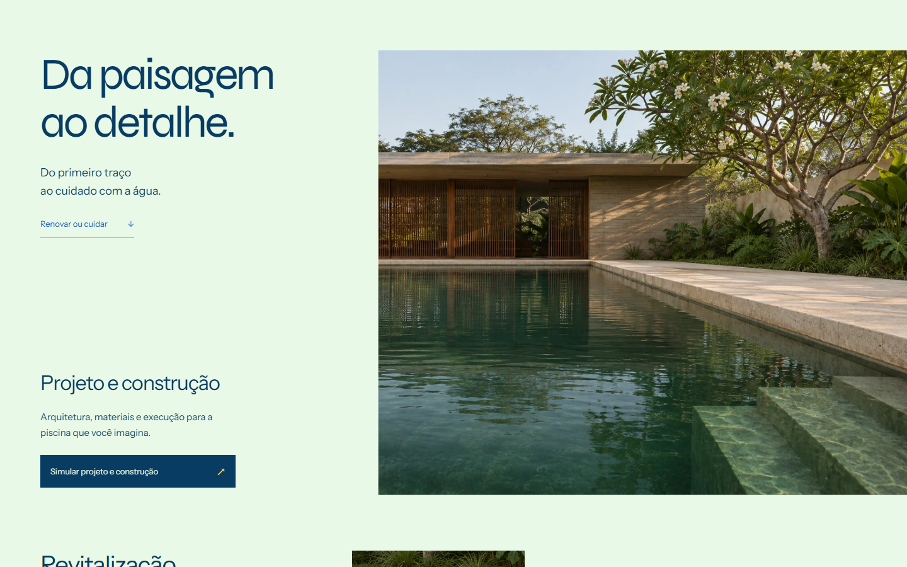

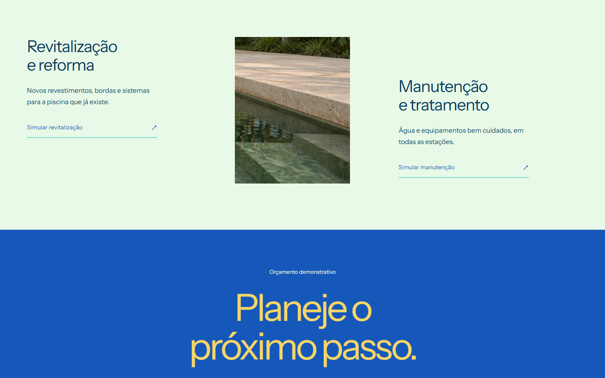

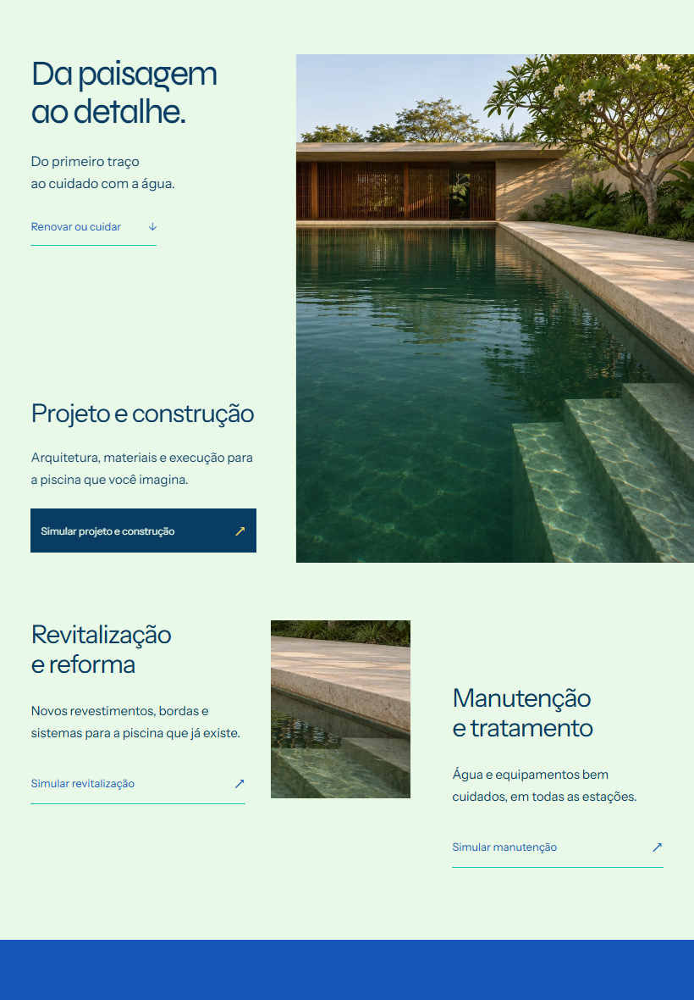

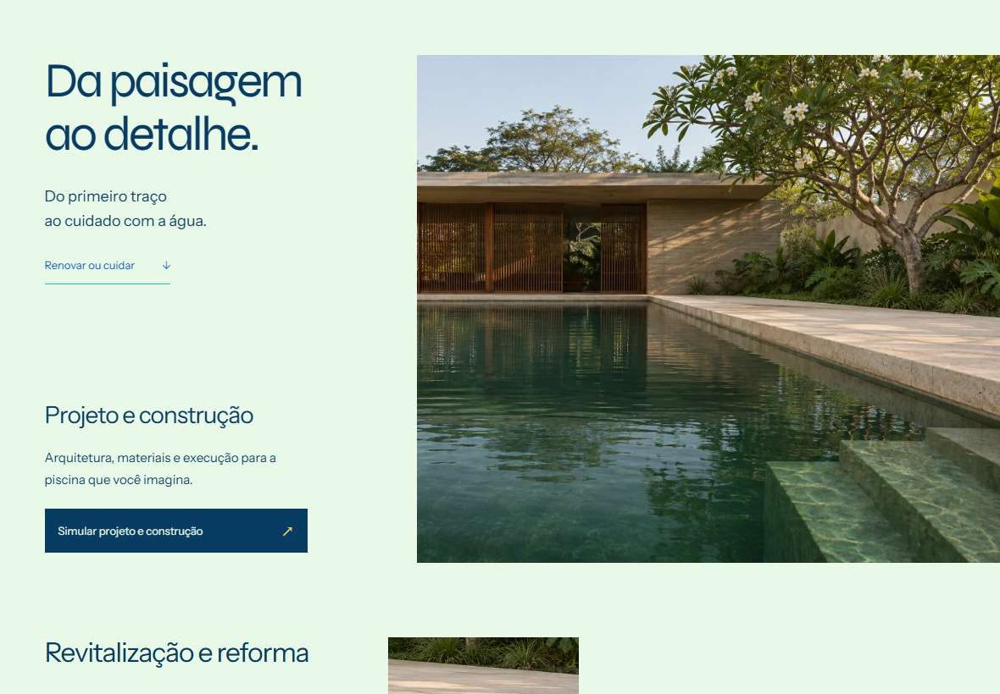

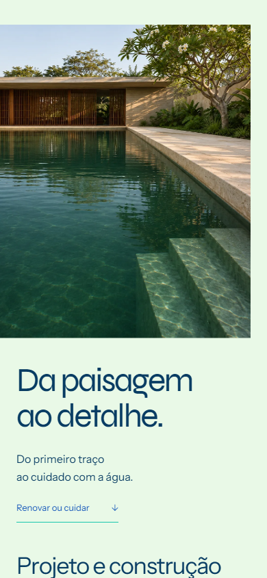

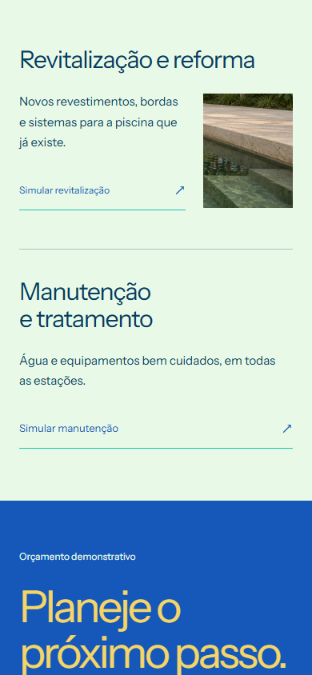

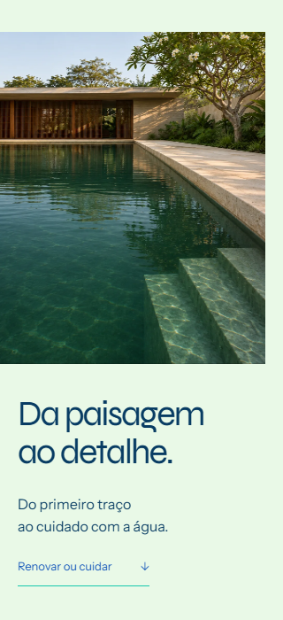

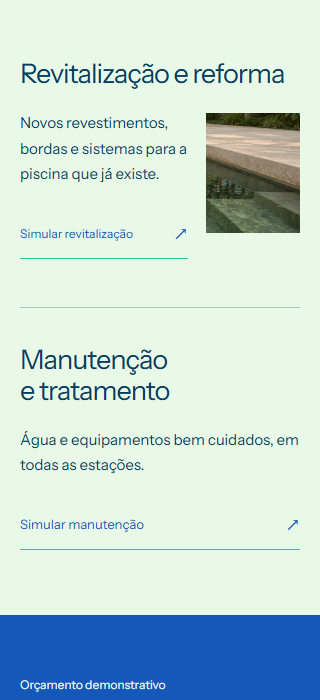
Passagem da mesma piscina

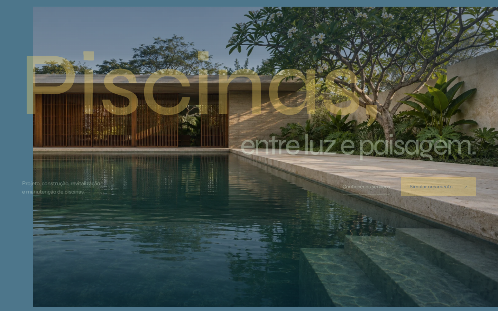

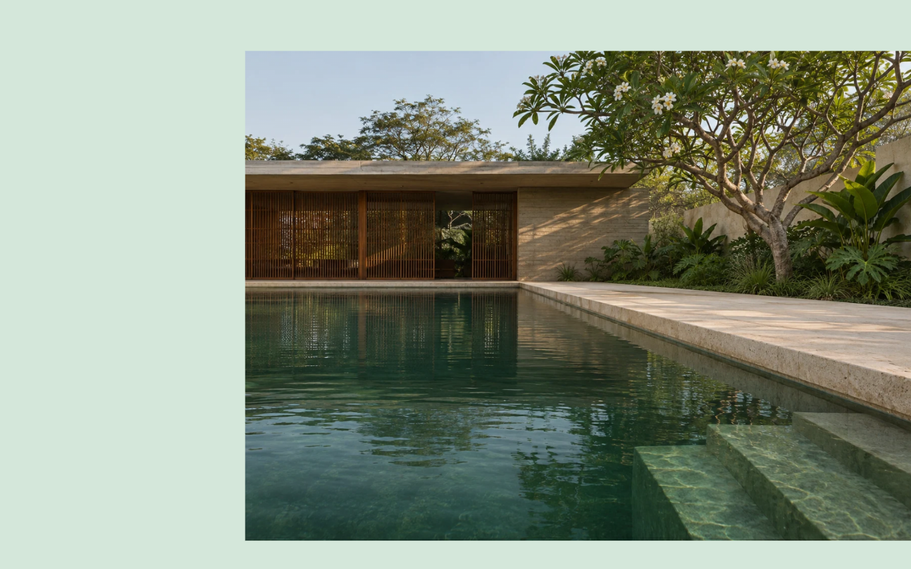

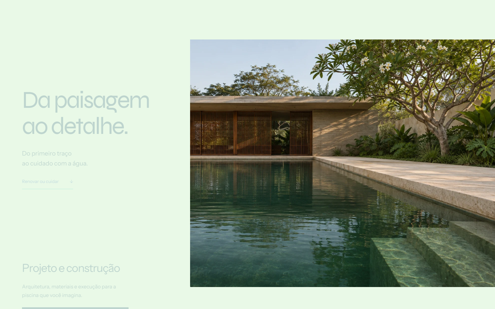

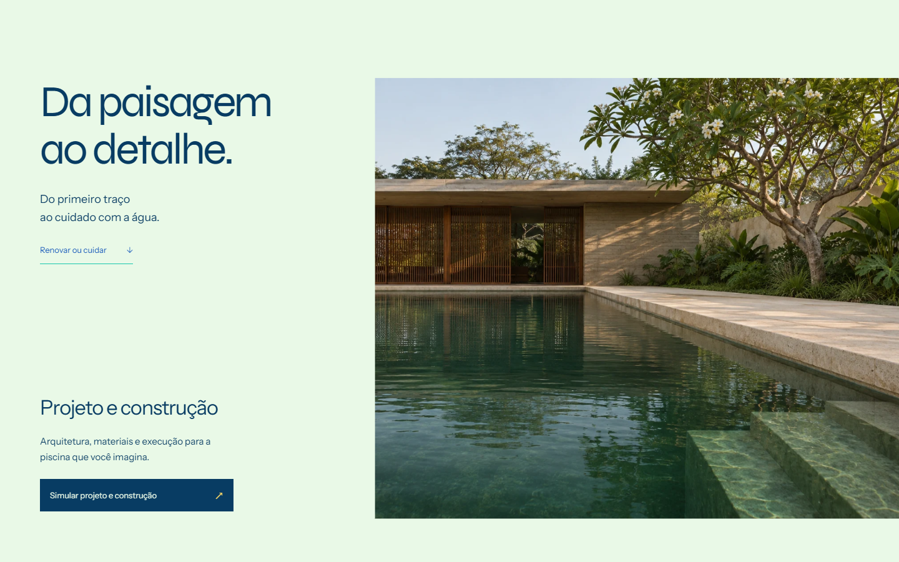
Gravações brutas de chegada e retorno
Wheel nativo no desktop; gestos de toque via CDP no mobile. Sem montagem ou transições adicionadas. O carregamento inicial também está registrado.
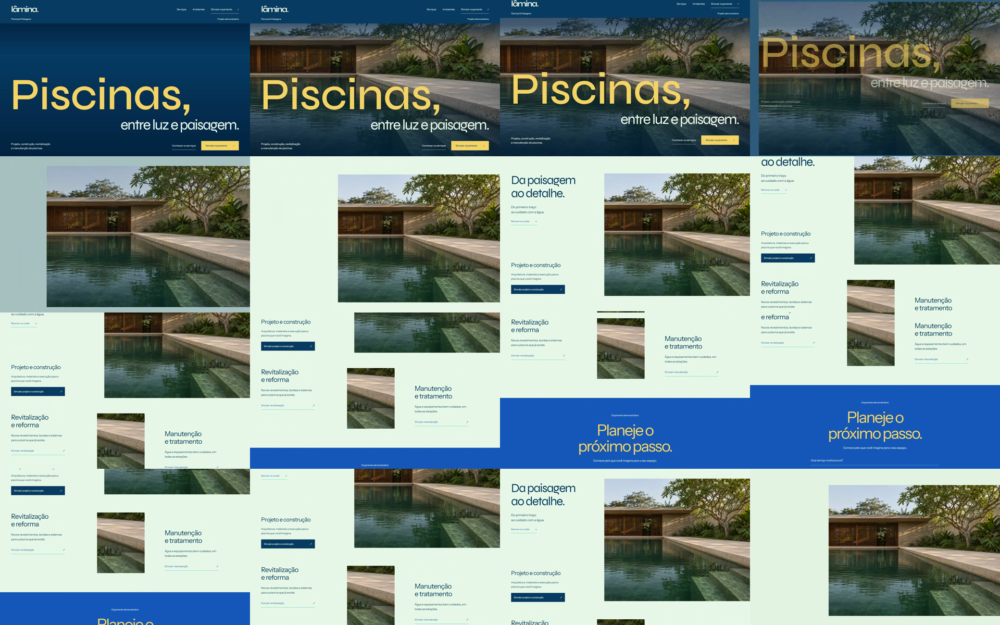
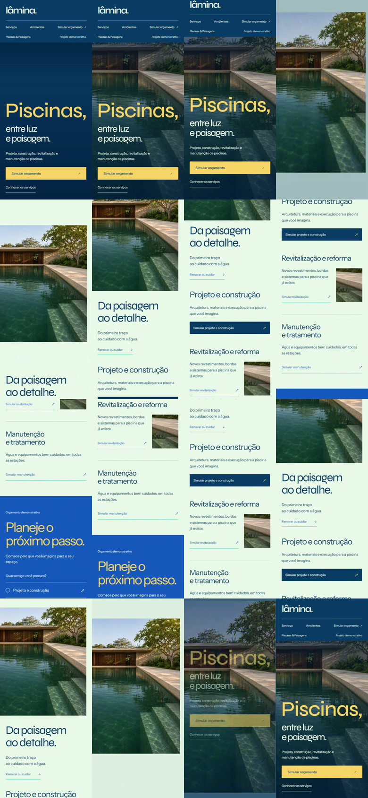
Alternativas gráficas


Original, estudos A/B e lógica comercial preservados. Sem commits, push ou deploy. A Etapa 3 não foi iniciada.